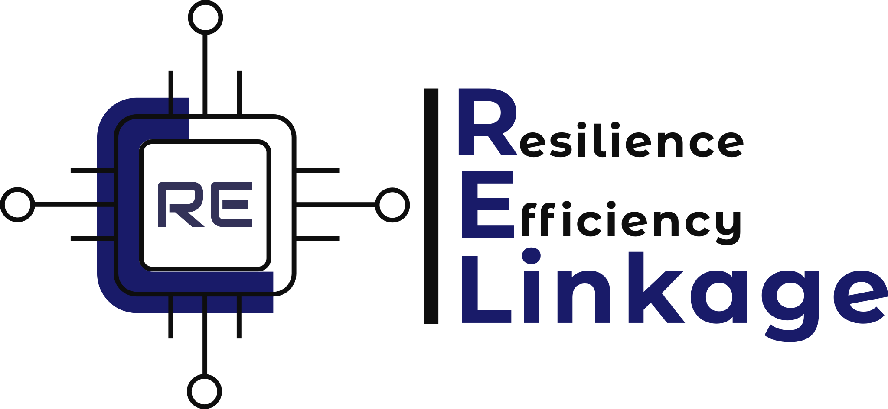

Industrial discipline工業執行紀律
Poland-side companies operate inside demanding European industrial supply chains, including automotive, automation, electronics and manufacturing environments.波蘭端企業長期在要求嚴格的歐洲工業供應鏈中運作，涵蓋汽車、自動化、電子與製造環境。

Taiwan-Poland execution bridge for global technology expansion. 台灣與波蘭資源橋接，支援全球科技產業落地。
RE-Linkage helps Taiwan technology suppliers convert overseas opportunities into qualified local-resource pathways across Poland, Europe and North America. RE-Linkage 協助台灣科技供應鏈，將海外專案機會轉化為波蘭、歐洲與北美市場可執行的在地資源路徑。
The opportunity is global. Execution must become local. 機會是全球的，執行必須在地化。
Taiwan companies have high-potential opportunities across semiconductor capacity expansion, AI infrastructure, data centers and supply-chain localization. Yet it is not practical to move every engineering, construction, installation, service and project-management resource from Taiwan into each U.S. or European market. 台灣企業在半導體擴產、AI 基礎建設、資料中心與供應鏈在地化中，正面臨高度成長機會。但企業不可能將所有工程、建設、安裝、服務與專案管理資源都從台灣搬到每一個美國或歐洲市場。
RE-Linkage helps clients pursue a practical balance between performance, cost, speed and local execution reliability. RE-Linkage 協助客戶在績效、成本、速度與在地執行可靠性之間取得務實平衡。
Why Polish resources 為什麼是波蘭資源
Poland has become part of German, European and global industrial networks. For Taiwan companies facing geopolitical pressure and global manufacturing expansion, Poland can serve as a practical execution platform for engineering, automation, construction, installation, staffing and operational support. 過去數十年，波蘭已成為德國、歐洲與全球工業網絡的一部分。對面對地緣政治壓力與全球製造佈局需求的台灣企業而言，波蘭可以成為建立工程、自動化、建設、安裝、人力配置與營運支援能力的實際執行平台。
Poland-side companies operate inside demanding European industrial supply chains, including automotive, automation, electronics and manufacturing environments.波蘭端企業長期在要求嚴格的歐洲工業供應鏈中運作，涵蓋汽車、自動化、電子與製造環境。
Polish engineering and automation companies can bring experience beyond local domestic projects, including international implementation and service models.波蘭工程與自動化企業具備超越本地市場的國際實施與服務經驗，可協助台灣企業建立海外支援模式。
Through Poland-side ecosystems, Taiwan companies can evaluate resources for Europe, North America and global customer support, not only Poland market entry.透過波蘭端生態資源，台灣企業可以評估歐洲、北美與全球客戶支援，不只是進入波蘭單一市場。
For Taiwan companies給台灣企業
Taiwan's advanced manufacturing supply chain is known for speed, flexibility, customer commitment and practical problem solving. U.S., European and Polish project teams often work with clearer scope, contract boundaries, change control, work-hour discipline and risk allocation. 台灣先進製造供應鏈以速度、彈性、客戶承諾與務實解決問題著稱。美國、歐洲與波蘭專案團隊則通常更重視範圍定義、合約邊界、變更管理、工時紀律與風險分配。
Both operating logics have value. RE-Linkage helps reduce communication cost by translating expectations, clarifying real project needs and building cooperation models that can work in the field, not only on paper. 兩種執行邏輯各有價值。RE-Linkage 的角色是協助雙方轉譯期待、釐清真正需求、降低溝通成本，建立能在現場真正執行的合作模式，而不只是紙上協議。
Resource network資源網絡
RE-Linkage works with Semicon Supply Poland and engages Poland-side engineering, automation, construction and industrial resources based on each project's needs. Logos are not displayed until partner approval is confirmed. RE-Linkage 與 Semicon Supply Poland 合作，並依據每一個專案需求，協助台灣企業連結波蘭端工程、自動化、建設與工業資源。在取得正式核准前，網站不展示合作方 logo。
Contracted ecosystem relationship合作生態系關係
Semiconductor and electronics ecosystem support connecting Asia with Europe and North America through Poland.透過波蘭連結亞洲、歐洲與北美的半導體與電子產業生態支援資源。
semiconsupply.plPoland-side resource reference波蘭端資源參考
Automation, robotics, intralogistics, industrial IT and engineering capabilities to be reviewed for project-fit and partner approval.自動化、機器人、廠內物流、工業 IT 與工程能力，將依專案適配性與合作方核准進一步評估。
aiut.comPoland-side resource reference波蘭端資源參考
Design & Build, general contracting, industrial facilities and data center construction capabilities to be reviewed for project-fit and partner approval.Design & Build、總承包、工業設施與資料中心建設能力，將依專案適配性與合作方核准進一步評估。
atlasward.plReferences are subject to project relevance, availability and mutual approval. No exclusivity or guaranteed project commitment is implied. 上述資源需依專案需求、可行性與雙方核准而定。網站文字不表示排他合作或保證承接任何專案。
For Polish resource partners給波蘭資源合作方
RE-Linkage is building a curated cross-border resource network connecting Polish industrial, engineering, automation, construction and project-support capability with Taiwan companies expanding into Europe and North America. RE-Linkage 正建立一個精選跨境資源網絡，將波蘭工業、工程、自動化、建設與專案支援能力，連結到正在拓展歐洲與北美的台灣企業需求。
For Poland-side companies, participation creates visibility into Taiwan supplier needs in semiconductor facilities, data center infrastructure, AI server supply chains, industrial automation, local assembly and overseas project execution. 對波蘭端公司而言，加入此網絡代表有機會接觸台灣供應鏈在半導體設施、資料中心基礎建設、AI 伺服器供應鏈、工業自動化、在地組裝與海外專案執行上的實際需求。
Register Resource Capability登錄資源能力Be considered when Taiwan companies need overseas engineering, construction, automation, installation or project-support resources.當台灣企業需要海外工程、建設、自動化、安裝或專案支援資源時，有機會被納入評估。
RE-Linkage helps clarify industry, project scope, market, timing and cultural expectations before introductions are made.RE-Linkage 會先協助釐清產業、專案範圍、市場、時程與文化期待，再進行合適介紹。
Network registration supports evaluation and matching only. Project engagement remains subject to mutual interest, capability fit and commercial agreement.登錄資源僅作為評估與媒合基礎，實際合作仍需視雙方意願、能力適配與商業條件而定。
Join the resource network加入資源媒合資料庫
RE-Linkage connects Taiwan's global technology expansion needs with qualified Polish, European and U.S. resource providers. Initial matching is intentionally broad: direct, adjacent and complementary resources may be considered when they can help solve the project need. RE-Linkage 將台灣科技供應鏈的全球拓展需求，連結到合格的波蘭、歐洲與美國資源方。初期媒合不只限於完全相同分類，也會評估直接相關、相鄰相關與互補型資源，以提高實際解決問題的可能性。
Submit your company profile, industry, product and local support needs so RE-Linkage can understand your overseas execution requirements and identify possible Poland-side, U.S. or European resources. 提交公司背景、產業、產品與在地支援需求，讓 RE-Linkage 了解你的海外執行需求，並評估可能的波蘭、美國或歐洲資源。
Submit your capabilities to be considered for Taiwan companies' overseas expansion needs across semiconductor, data center, automation, construction, installation, staffing and project support. 提交公司能力，讓你的服務有機會被納入台灣企業海外拓展需求的評估範圍，包含半導體、資料中心、自動化、建設、安裝、人力與專案支援。
Information submitted through these forms is used only for RE-Linkage internal review, resource qualification and potential matching discussions. RE-Linkage will not publicly publish submitted company information or share sensitive project details with third parties without prior consent. 透過本表單提交的資訊，僅用於 RE-Linkage 內部審核、資源資格評估與潛在媒合討論。未經事前同意，RE-Linkage 不會公開發布提交之公司資訊，也不會向第三方揭露敏感專案細節。
Submitting information does not guarantee matching, partnership, project award, commercial engagement or acceptance into any formal member program. 提交資訊不代表保證媒合成功、建立合作關係、取得專案、形成商業委任，或被接受為任何正式會員計畫。
Representative engagement model代表性合作模式
Active model進行中模式
RE-Linkage is currently supporting a Taiwan-based semiconductor facility supplier in advancing its U.S. expansion path, with Arizona and Texas as key target markets. The work focuses on local resource mapping, business development coordination, project opportunity alignment and preparation for ongoing support across semiconductor facility and data center-related projects. RE-Linkage 目前正協助一家台灣半導體設施供應商推進美國市場拓展，以 Arizona 與 Texas 作為重要目標市場。合作重點包括在地資源盤點、商務開發協調、專案機會對接，以及為後續半導體設施與資料中心相關專案建立持續支援能力。
Resource mapping for construction, automation, intralogistics, staffing and local execution support.盤點建設、自動化、廠內物流、人力配置與在地執行支援資源。
Coordination pathways for suppliers that need local installation, engineering and project-interface resources.協助需要在地安裝、工程與專案介面資源的供應商建立協調路徑。
Preparing Taiwan companies for overseas customer expectations, partner discussions and execution constraints.協助台灣企業準備海外客戶期待、合作夥伴討論與執行條件限制。
Client names and sensitive project details are withheld for confidentiality. No reference to any specific end customer is implied. 基於客戶與專案保密原則，網站不揭露客戶名稱與敏感專案細節，亦不暗示任何特定終端客戶關係。
About RE-Linkage關於 RE-Linkage
RE-Linkage is built on the Founder's decades of cross-border operating experience across advanced manufacturing, semiconductor-related businesses, electronics supply chains, international procurement, technology commercialization and market expansion. RE-Linkage 建立於創辦人多年跨國經營與先進製造產業實戰經驗之上。其背景橫跨製造業、半導體相關產業、電子供應鏈、國際採購、技術商業化與海外市場拓展。
The work is practical and senior-level: identifying real needs, reducing execution friction, aligning business expectations and helping Taiwan companies move from opportunity to action in unfamiliar markets. RE-Linkage 的工作是務實且高階的：辨識真正需求、降低執行摩擦、對齊商業期待，並協助台灣企業在陌生市場中從機會走向可執行行動。
Leadership核心團隊
RE-Linkage is led by senior cross-border operators and advisors with experience across advanced manufacturing, semiconductor-related businesses, public affairs, governance and international market expansion. RE-Linkage 由具備跨境經營、先進製造、半導體相關產業、公共事務、治理與國際市場拓展經驗的高階實戰者與顧問共同支持。
Founder & CEO創辦人暨執行長
Irene Yuan brings more than 25 years of senior operating, business development and market-expansion experience across Taiwan, China and the United States, with exposure to passive components, IC design, semiconductor instrumentation, turn-key integration, international procurement and technology commercialization. Irene Yuan 具備超過 25 年高階經營、商務開發與市場拓展經驗，橫跨台灣、中國與美國市場，背景涵蓋被動元件、IC 設計、半導體儀器、turn-key integration、國際採購與技術商業化。
Her prior leadership roles include Chairwoman/CEO of Voltraware, COO of jjPlus, CEO of Flatek and Senior VP of Jess-Link. 她曾擔任 Voltraware 董事長/CEO、jjPlus COO、Flatek CEO，以及 Jess-Link Senior VP。
Co-Founder / Public Affairs & Governance Advisor共同創辦人 / 公共事務與治理顧問
Dr. Jen Hui Hsu contributes deep experience in public affairs, government relations, academic leadership, governance and NGO/NPO engagement, strengthening RE-Linkage's ability to understand institutional context and stakeholder expectations. 許仁輝博士具備公共事務、政府關係、學術領導、治理與 NGO/NPO 參與經驗，強化 RE-Linkage 對制度環境與利害關係人期待的理解能力。
Dr. Hsu previously served as Deputy Minister of Taiwan's Ministry of Finance and held senior academic and governance leadership roles in Taiwan. 許博士曾任台灣財政部政務次長，並曾在台灣擔任高階學術與治理相關職務。
Industry insights產業觀察
RE-Linkage shares observations on semiconductor, data center, AI server and advanced manufacturing supply-chain expansion into the U.S. and Europe, with a focus on local execution resources, cross-cultural coordination and practical market entry challenges. RE-Linkage 分享半導體、資料中心、AI 伺服器與先進製造供應鏈拓展美國與歐洲市場的產業觀察，聚焦在地執行資源、跨文化協調與實際落地挑戰。
Market note市場觀察
Taiwan suppliers are entering a global expansion window, but overseas projects require more than customer access. Local engineering, installation, documentation and cross-cultural coordination are becoming core execution issues. 台灣供應商正進入全球拓展窗口，但海外專案需要的不只是客戶機會。在地工程、安裝、文件、安全規範與跨文化協調，正在成為核心執行議題。
Resource perspective資源觀點
Polish industrial and engineering resources should not be viewed only as Poland-market support. Their European industrial discipline and global supply-chain experience can be relevant for Taiwan companies expanding into Europe and North America. 波蘭工業與工程資源不應只被視為波蘭市場支援。其歐洲工業紀律與全球供應鏈經驗，對拓展歐洲與北美的台灣企業具有評估價值。
Execution issue執行議題
Data center build-up is not only construction. It combines hardware deployment, power and cooling, rack and cabling structure, network equipment, software infrastructure, testing and local integration support. 資料中心建置不只是建設工程，而是硬體部署、電力與冷卻、機櫃與線路、網路設備、軟體基礎架構、測試與在地整合支援的綜合執行問題。
Contact聯絡我們
Use the form to outline your market, industry, project need and timeline. This first local version opens an email draft to Admin@re-linkage.com. 請使用表單簡述市場、產業、專案需求與時程。此第一版本會開啟寄給 Admin@re-linkage.com 的 email 草稿。
Admin@re-linkage.com